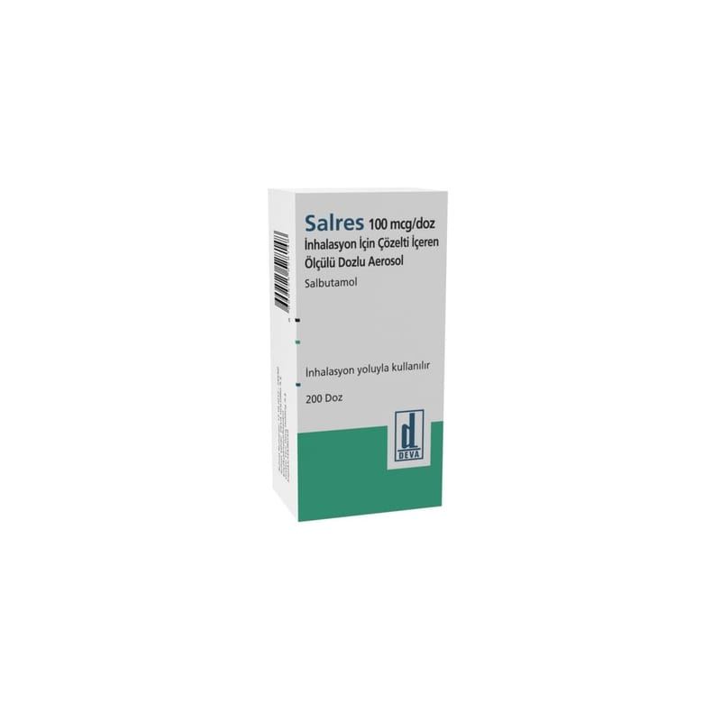

Salres 100 mcg/doz İnhalasyon İçin Çözelti İçerenölçülü Dozlu Aerosol, 200 doz

Ne için kullanılır
KT · Bölüm 1SALRES etkin madde olarak salbutamol içerir. Hızlı etkili bronkodilatörler (bronşları genişletici) adı verilen bir ilaç grubunun üyesidir.
SALRES nebüller normal serum fizyolojik içinde salbutamol çözeltisi içeren plastik ampullerdir. Her nebül 2.5 ml çözelti içerir. Nebüllerin içinde bulunan sıvı haldeki SALRES nebülizör adı verilen cihaz yardımıyla buhar haline getirilir. Ağızdan solunarak akciğerlere çekilen SALRES bir kaç dakika içinde hava yollarını genişleterek daha kolay nefes alıp vermenizi sağlar. Astımda semptom giderici olarak kullanılan rahatlatıcı ilaçlardır. Kontrol edici ilaç olarak kullanılmamalıdırlar. Kronik obstrüktif (tıkayıcı) akciğer hastalığında (KOAH) belirtileri azaltmak için ve kurtarıcı ilaç olarak kullanılır. Düzenli tedavide tercih edilmez.